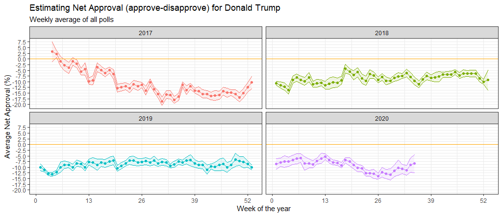

Donald Trump's Approval Rating
Introductory code:
Loading libraries:
Trump’s Approval Margins
Loading data:
# Import approval polls data
setwd("C:/Users/mayss/Documents/LBS_Term1/Data Analytics for Finance/my_website/content/projects/project3")
approval_polllist <- read_csv(file='data/approval_polllist.csv')
# or directly off fivethirtyeight website
# approval_polllist <- read_csv('https://projects.fivethirtyeight.com/trump-approval-data/approval_polllist.csv')
glimpse(approval_polllist)## Rows: 15,619
## Columns: 22
## $ president <chr> "Donald Trump", "Donald Trump", "Donald Trump",...
## $ subgroup <chr> "All polls", "All polls", "All polls", "All pol...
## $ modeldate <chr> "9/27/2020", "9/27/2020", "9/27/2020", "9/27/20...
## $ startdate <chr> "1/20/2017", "1/20/2017", "1/20/2017", "1/21/20...
## $ enddate <chr> "1/22/2017", "1/22/2017", "1/24/2017", "1/23/20...
## $ pollster <chr> "Gallup", "Morning Consult", "Ipsos", "Gallup",...
## $ grade <chr> "B", "B/C", "B-", "B", "B-", "C+", "B+", "B", "...
## $ samplesize <dbl> 1500, 1992, 1632, 1500, 1651, 1500, 1190, 1500,...
## $ population <chr> "a", "rv", "a", "a", "a", "lv", "rv", "a", "lv"...
## $ weight <dbl> 0.262, 0.680, 0.153, 0.243, 0.142, 0.200, 1.514...
## $ influence <dbl> 0, 0, 0, 0, 0, 0, 0, 0, 0, 0, 0, 0, 0, 0, 0, 0,...
## $ approve <dbl> 45.0, 46.0, 42.1, 45.0, 42.3, 57.0, 36.0, 46.0,...
## $ disapprove <dbl> 45.0, 37.0, 45.2, 46.0, 45.8, 43.0, 44.0, 45.0,...
## $ adjusted_approve <dbl> 45.7, 45.3, 43.2, 45.7, 43.4, 51.5, 37.6, 46.7,...
## $ adjusted_disapprove <dbl> 43.6, 38.3, 43.9, 44.6, 44.5, 44.5, 42.8, 43.6,...
## $ multiversions <chr> NA, NA, NA, NA, NA, NA, NA, NA, NA, NA, NA, NA,...
## $ tracking <lgl> TRUE, NA, TRUE, TRUE, TRUE, TRUE, NA, TRUE, TRU...
## $ url <chr> "http://www.gallup.com/poll/201617/gallup-daily...
## $ poll_id <dbl> 49253, 49249, 49426, 49262, 49425, 49266, 49260...
## $ question_id <dbl> 77265, 77261, 77599, 77274, 77598, 77278, 77272...
## $ createddate <chr> "1/23/2017", "1/23/2017", "3/1/2017", "1/24/201...
## $ timestamp <chr> "00:45:20 27 Sep 2020", "00:45:20 27 Sep 2020",...# Use `lubridate` to fix dates, as they are given as characters.Create a plot
We calculate the average net approval rate (approve- disapprove) for each week since he got into office:
approval_polllist %>%
mutate(
week = week(as.Date(enddate, format="%d/%m/%Y"))
) %>%
summarise(
week = week,
N = n(),
std_dev = sd(approve, na.rm=F),
net_approval_rate = mean(approve) - mean(disapprove)) %>%
summarise(
week = week,
net_approval_rate = net_approval_rate,
N = N,
std_dev = std_dev,
upper_ci = mean(net_approval_rate) + 1.96*(std_dev/sqrt(N)),
lower_ci = mean(net_approval_rate) - 1.96*(std_dev/sqrt(N))
)## # A tibble: 15,619 x 6
## week net_approval_rate N std_dev upper_ci lower_ci
## <dbl> <dbl> <int> <dbl> <dbl> <dbl>
## 1 NA -11.1 15619 3.54 -11.0 -11.1
## 2 NA -11.1 15619 3.54 -11.0 -11.1
## 3 NA -11.1 15619 3.54 -11.0 -11.1
## 4 NA -11.1 15619 3.54 -11.0 -11.1
## 5 NA -11.1 15619 3.54 -11.0 -11.1
## 6 NA -11.1 15619 3.54 -11.0 -11.1
## 7 NA -11.1 15619 3.54 -11.0 -11.1
## 8 NA -11.1 15619 3.54 -11.0 -11.1
## 9 NA -11.1 15619 3.54 -11.0 -11.1
## 10 NA -11.1 15619 3.54 -11.0 -11.1
## # ... with 15,609 more rowsTrump_approval<-approval_polllist%>%
mutate(date=as.Date(approval_polllist$enddate, format="%m/%d/%Y"),
week=week(date),
year=year(date),
net_approval=approve-disapprove) %>%
group_by(week,year)%>%
summarise(mean=mean(net_approval),
stdev=sd(net_approval),
count=n(),
se=stdev/sqrt(count),
t_critical=qt(0.975,count-1),
lower_bound=mean-t_critical*se,
upper_bound=mean+t_critical*se)
Trump_approval %>%
ggplot(aes(x=week, y=mean)) +
geom_point() +
geom_line()+
geom_ribbon(aes(ymin=lower_bound, ymax=upper_bound), linetype=2, alpha=0.5) +
facet_wrap(~year) +
geom_hline(yintercept = 0, color ="orange") +
xlab("Week of the year") +
ylab("Average net approval (%)") +
labs(title="Estimating Net Approval (approve-disapprove) for Donald Trump",
subtitle="Weekly average of polls")
You can facet by year, and add an orange line at zero. Your plot should look like this:

Compare Confidence Intervals
Compare the confidence intervals for week 15 (6-12 April 2020) and week 34 (17-23 August 2020).
Trump_approval %>%
filter(
year ==2020,
week %in% c(15, 34))## # A tibble: 2 x 9
## # Groups: week [2]
## week year mean stdev count se t_critical lower_bound upper_bound
## <dbl> <dbl> <dbl> <dbl> <int> <dbl> <dbl> <dbl> <dbl>
## 1 15 2020 -7.62 3.27 94 0.338 1.99 -8.29 -6.95
## 2 34 2020 -11.5 7.14 84 0.779 1.99 -13.0 -9.93Coronavirus affected voters approval rating of Donald Trump, as we enter week 34 with still little action on the containment of the virus voters became more uncertain and less voters supported them